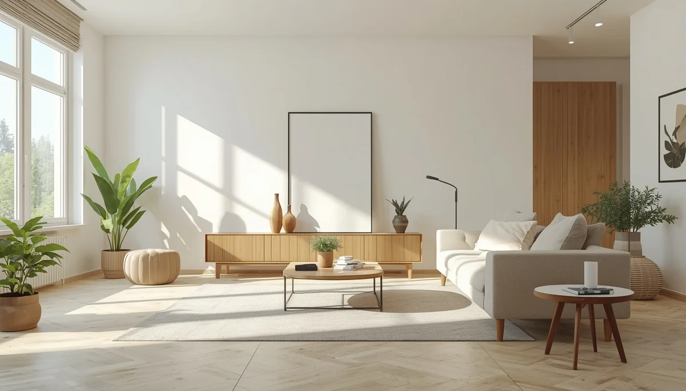

Un entorno seguro: la base de la prevención
El hogar es el escenario principal donde los niños y niñas crecen, experimentan y desarrollan su autonomía. Sin embargo, su natural curiosidad por descubrir el entorno no siempre viene acompañada de la percepción del peligro. Adaptar los espacios cotidianos de forma anticipada es la medida más eficaz para proteger su bienestar sin limitar su capacidad de exploración.
Anticiparse a la curiosidad infantil
A medida que los menores ganan movilidad y destreza, su radio de acción se amplía de manera exponencial. Analizar cada estancia desde su altura permite identificar puntos críticos —como enchufes, bordes afilados, fuentes de calor o armarios accesibles— antes de que se conviertan en un riesgo real para su integridad física.
Equilibrio entre protección y autonomía
Prevenir los accidentes domésticos no significa transformar la vivienda en un espacio inaccesible o prohibir la experimentación. Se trata de diseñar un entorno pasivo y seguro donde los riesgos graves estén controlados, permitiendo que la crianza transcurra con confianza, serenidad y un margen adecuado de libertad supervisada.
"Un hogar bien adaptado no frena el deseo natural de aprender del niño, sino que le ofrece un terreno seguro donde crecer con confianza."
Una responsabilidad compartida en el hogar
Involucrar a todos los miembros de la familia en la revisión periódica de las medidas de seguridad asegura que los hábitos de prevención se mantengan consolidados en el día a día.
➔ Volver al índice de Prevención de Accidentes